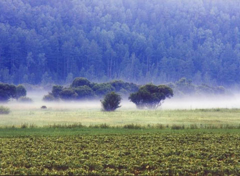

研究国际视野之生态文明理论
影响各种思潮的主要有生态马克思主义（生态社会主义）、生态女性主义、深生太学等等。我们要的是改变和调整理性的宰制性特征，提倡着绿色坏境。才可以形成与生态文明相适应的，还可以持续性的为绿色环境文化范式。
生态文明的到来，标志着人类

《寂静的春天》与地球生态关怀
从19世纪下半叶到20世纪初地球生态环境问题尚不明朗，但先知先觉者在不同角度旁敲侧击地触及了这个问题，一些学者已开始关注人与自然关系问题。一战后法国思想家史怀哲提出“敬畏生命”的全新生存伦理观，认为“敬畏生命、生命的休戚与共是世界中的大事”。美国林学家利奥波德则在《沙乡年鉴》（1947年）中提出创建“大地伦理学”的任务，认为自然“是一个高度组织起来的结构，它的功能的运转依赖于它的各种不同部分的相互配合和竞争”。而美国著名女科学家蕾切尔·卡逊在1962年正式出版的《寂静的春天》及其所引发的举世瞩目的“杀虫剂之争”，则是国际社会关注生态的开始。
在《寂静的春天》中，卡逊通过一桩桩具体的实证案例揭示出化学农药对自然界与人类的危害，向世人警示：“我们冒着极大的危险竭力把大自然改造得适合我们的心意，但却未能达到目的，这确实是令人心痛的讽刺。”《寂静的春天》是人类环境意识的启蒙者和照亮者，它不仅唤醒了公众的环境保护意识，而且使生态学成为显学，对人类文明的发展及生态文明时代的到来有着直接的推动和贡献。
《寂静的春天》问世后，引发地球环境保护运动的展开。20世纪60年代至今已出现两次环境保护运动浪潮。第一次高潮出现在20世纪六七十年代，第二次是在九十年代以后。从第一次到第二次的发展轨迹看，无论是现实层面还是理论研究，都有越来越多的公众关注地球生态保护问题，理论家们更是从环境危机的表象转向纵深的层面和整体问题的思考，并着力探究解决问题的根本途径。
深度理论探索：西方生态思潮
生态问题难以仅仅靠治理措施与政策法规的出台而得到彻底解决，必须是人类深层意识与价值理念的根本改变，所以，不同思想背景的人纷纷在理论上探索，寻求解决问题的有效路径。在各种思潮中影响较大的主要有生态马克思主义（生态社会主义）、深生态学、生态女性主义等。
在西方的生态理论思潮中，生态马克思主义有较高和十分重要的地位，也是当代西方最有影响的马克思主义流派之一。生态马克思主义者在继承和运用马克思主义原理分析批判生态危机，着力阐述马克思主义理论对于人类目前面临的生态危机的相关性，并“把矛盾置于资本主义生产与整个生态系统之间的基本矛盾这一高度加以认识”，认为资本主义制度导致了经济和生态的双重危机。为了解决二者的冲突必须进行生态重建。
作为生态伦理思潮的主要代表之一，深生态学则强调自然的内在价值和生物的绝对平等性，否认人的特殊价值，认为人类只是所有物种中的一种，既不更好也不更坏，众多物种在整个生态系统中都有自己的位置，人类世界与非人类世界没有任何区别和分界线，坚持宇宙是“不可分割”的整体。
生态女性主义认为，生态危机与人类社会的男性中心主义有着深刻的关联，文明对自然的压迫和对女性的压迫有着直接的联系，现代性危机尤其是现代精神的危机，与男性精神的单向度膨胀扩张和女性文化精神的缺失有着密切的联系。这种文化维度的缺失引发了严重的结果，造成人与自然和人与人之间关系的紧张和恶化，因此生态女权主义理论家们指出，要消除生态危机必须倡导恢复女性文化精神，女人和自然之间的关系源远流长，二者在自然造化力量上有着相似的表现。女性精神与原则的恢复无疑可以使人与自然、人与人的和谐关系得到重建。
西方生态思潮虽然各执一说，但论争的本质与核心问题是人类中心主义和自然中心主义。对此，我们既要反对极端人类中心主义，同时也反对极端自然中心主义（自然崇拜），从而实现双重超越，才能更好地解决人类与地球的危机。
重塑绿色理性
虽然在生态危机这一点上理性本身难辞其咎，但是现代文明的发展历程告诉我们，我们需要调整和改变的是理性的宰制性特征，倡导绿色理性，从而形成一种与生态文明相适应的以可持续性为导向的绿色理性文化范式。
要重塑绿色理性须先检省理性之弊，纠正理性之偏至。生态文明所要批判和检省的理性之弊主要有二，一是理性帝国主义，即将理性作为认知世界的唯一方式，成为一种霸权。二是以宰制为特征的主宰型理性，它以进攻性、等级性和工具性为主要特征，它的深层结构是统治的逻辑和二元论。理性的宰制性特征的片面统治产生的后果主要是人与自然的对立导致强人类中心主义和掠夺性伦理观。因此海德格尔所探索的人类拯救与超越之路，首先就从反思与批判这种人的自大逻辑和对自然的强权的形而上学开始。仅有宰制维度的理性，由于只依据统治的逻辑和二元论的深层结构行事，只看到工具主义和同质化，否认依赖性和相互性，因此遮蔽了它的生态视野，也制造了自身的“囚徒困境”。
成为之前的主流理性，可以宰制理性的排斥感性、情感，能让未来绿色理性情调感性的情感价值。在西方的理性建构中驱逐主宰身份并不是要求我们放弃理性本身，而是要求设置另一种理性，这种理性具有较少等级性、更多的民主性和在它的位置上的多元化的身份。”“这样一种理性也能够开始珍视这个世界的文化和生命那无可估量的丰富性和多样性，与其他生命一起参与到共同